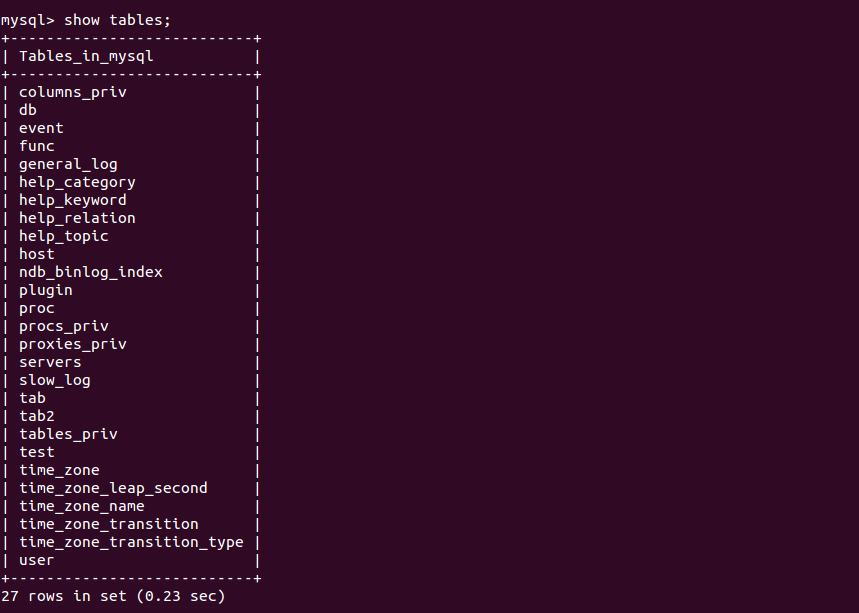

Server-side scripting is used in website design to embed scripts in HTML code so that user’s request to the server can be handled by the script running server-side before the server responds to the client’s request. It is used to provide an interface and to limit client access to databases and other sources. Setting up a Web application today can be a nightmare since all of the different components (UI, back-end, server-side logic etc) are written using different languages. In every step there is a mismatched conversion which leads to a potential loss of information. These platforms are an attempted solution to these problems.
JaggeryJS offers a completely Javascript way to write all parts of Web applications and services as a way to reduce/eliminate impedance mismatches across different layers of the Web application and API development experience.It is a framework to write webapps and HTTP-focused web services in pure Javascript for all aspects of the application: front-end, communication, Server-side logic and persistence.It closes the gap between Web apps from Web services by allowing one to create both applications and APIs at the same time.
Create a directory called helloapp at {JAGGERY_HOME}/apps/
Create a jaggery file helloworld.jag inside the helloapp directory and add the following code snippet
<%
var name = 'Jaggery';
print("Hello " + name);
%>
Thats it! now point the browser to http://localhost:9763/helloapp/helloworld.jag
Prerequisites: - You will need a jdbc driver jar.You can dowload this jar “mysql_connector_java_5.1.10_bin_1.0.0” from here
This post will help you create jaggery App for to testing below use cases:
Create table in MySQL from Jaggery code
- Create Application name testmysql (Create Folder ‘testmysql’ in {JAGGERY_HOME}/apps/)
- Create test.jag file in ‘testmysql’ folder.
- Add below content

- <%
var query1 =”CREATE TABLE test(character_name varchar(30),house_name(20));”; config = {}; var db = new Database(“jdbc:mysql://localhost:3306/mysql”, “root”, “root”, config); try{
db.query(query1); print(‘Created the table’);} catch(e){
print(e.toString());} finally{
db.close();}
%>
- Note : Database(“jdbc:mysql://<mysql host>:<port>/<database>”, “<mysql_username>”, “<mysql_password>”, config);
- Start Jaggery server and go to ‘http://localhost:9763/testmysql/test.jag’
- Go to MySQL console and go to database test (use test;) and enter ‘show tables’
Insert data to MySQL from jaggery applications
Now change query to insert data to table such as
var query1 ="INSERT INTO test (character_name, house_name) VALUES('Hermione Granger', 'Gryffindor' );";
View the data in MySQL from jaggery
In here we will have return and we will make it print in jaggery page
var query1 ="SELECT * FROM test;"; var results = db.query(query1); print(results);Testing from MySQL